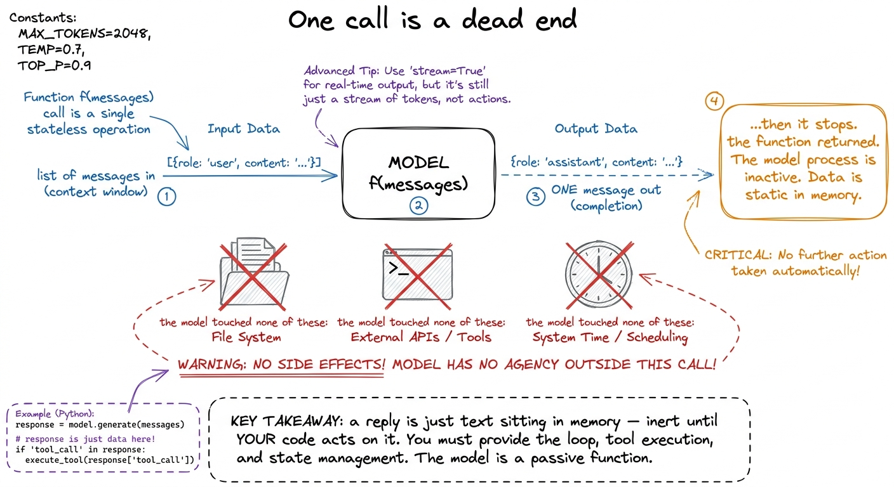
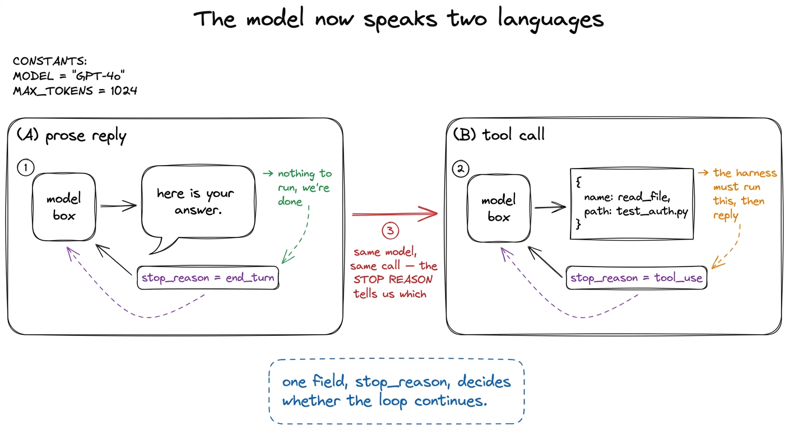
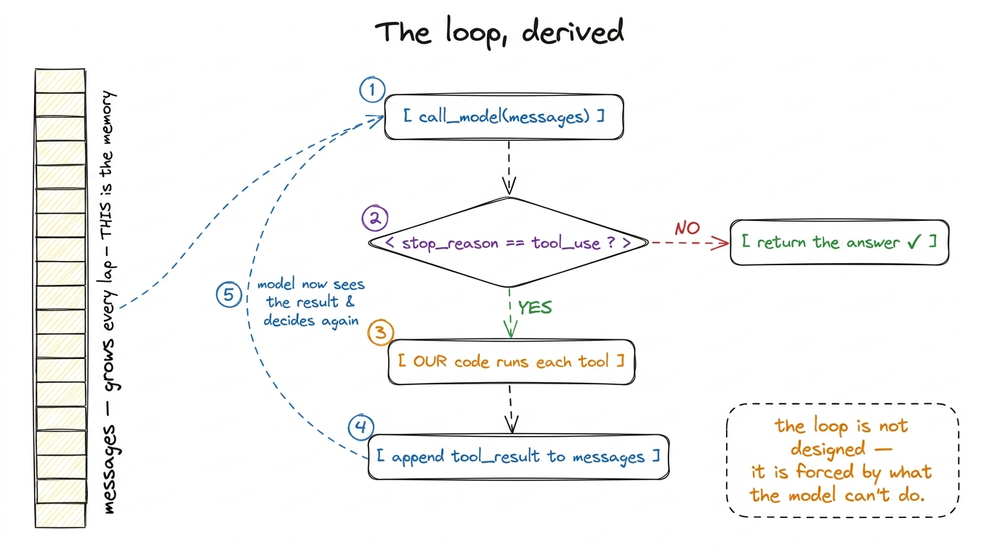
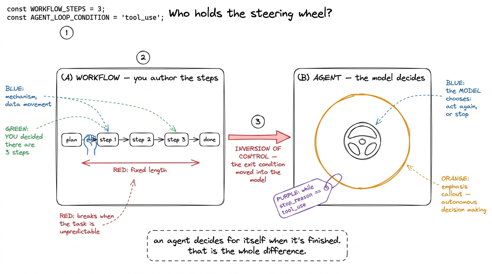

The agent loop from first principles LOOP
A model cannot do anything. I want to say that plainly before we write a single line, because the whole loop we are about to derive falls out of taking it seriously. You hand a model a list of messages; it hands you back one message. That is the entire transaction. It cannot open a file, run a command, wait, remember, or check its own work. It emits text and then it is done — the function has returned, and the machine is idle again. So how does this become an agent that reads your repo, edits three files, runs the tests, sees them fail, and fixes the bug? Not by making the model smarter. By wrapping it in a loop. This chapter derives that loop from nothing, and the surprising claim I want you to leave with is that the while-loop is the agency — not the model.
What one call actually gives you
Let's be precise about the primitive we're building on. A chat-style model is a pure function of the form reply = f(messages): you pass the conversation so far, you get exactly one more message back.1 This "one call in, one message out" shape is shared across every provider — Anthropic, OpenAI, Google. The harness we build stays deliberately agnostic to which one you plug in; see the model client. It is transactional: no state survives between calls except what you choose to pass in next time. And it is inert: the reply is just data — a string, or a structured request — sitting in your program's memory. Nothing happens because the model said something. Something happens because your code read what it said and acted.

figure rendering · One model call is a dead end: text in, one text out, then it stops. ThGive the model the request "fix the failing test" and it cannot fix anything. The best it can do is tell you what it would do: "let me look at the test file." That sentence is the crack we pry the whole loop open through. The model can't look — but it can ask. And if the model can ask, then our code can answer.
Teaching the model to ask: tool calls
We give the model a menu of actions it is allowed to request — a set of tools, each with a name and a schema for its arguments.2 The schema is not a formality — it is how you teach the model what the tool does and how to call it. We treat it as its own subject in tool schemas as contracts. Now, instead of only emitting prose, the model can emit a tool call: a structured message that says, in effect, "please run read_file with path="test_auth.py"." Crucially the model still does not run anything. It emits a request and returns, same as always. The difference is that this reply is no longer only for a human to read — it is a machine-readable instruction our program can dispatch.
So every reply now comes in one of two flavors, and the model itself tells us which. Providers surface this as a stop reason: the reply carries a field — stop_reason — that is tool_use when the model wants an action performed, and something like end_turn when it has simply finished talking. That one field is the pivot the entire loop turns on.

figure rendering · Every reply is either prose (end_turn) or a structured tool request (tDeriving the loop, one honest step at a time
Now watch the loop assemble itself from necessity. We are not designing it; we are being forced into it by what the model can and cannot do.
The user asks for something. Step one: we call the model. It replies with a tool call — it wants to read the test file. Step two: we notice the reply is a tool_use, not an answer, so we can't return yet; there is work to do. Step three: we run the tool — our code opens the file — because the model can't. Now we hold a result the model has never seen. Step four: we hand that result back by appending it to the conversation and calling the model again. And here is the whole game: on this second call the model sees its own request and the file contents, and it decides the next move — maybe propose an edit, maybe ask to run the tests. Step five: we're back at step one. We repeat.
When does this stop? Only when the model replies with prose instead of a tool call — a stop_reason that isn't tool_use. That is the model announcing, in the only vocabulary it has, "I have nothing more I need done; here is the answer." We didn't decide the task was complete. The model did. Written out, that is a while loop with a single exit condition, and it is the beating heart of every coding agent.
def run_agent(user_request):
messages = [{"role": "user", "content": user_request}]
while True:
reply = call_model(messages, TOOLS) # 1. ask the model
messages.append(assistant_msg(reply)) # remember what it said
if reply.stop_reason != "tool_use": # 2. prose, not a request?
return text_of(reply) # → the model is done
results = []
for block in reply.content: # 3. run every tool it asked for
if block.type == "tool_use":
out = run_tool(block.name, block.input)
results.append({
"type": "tool_result",
"tool_use_id": block.id,
"content": str(out),
})
messages.append({"role": "user", "content": results}) # 4. feed results back
# 5. loop — the model now sees the results and chooses againThat is genuinely the whole thing. Ten meaningful lines. Everything else in this book — tools, permissions, context management, durability, orchestration — is scaffolding bolted onto this.3 We build the runnable version, with real read_file and run_bash tools, in your first bare harness. Here the point is the shape, not the code.

figure rendering · The loop derived from necessity: call, check the stop reason, run theTwo quiet subtleties that carry the whole idea
The message array is the memory. Notice we append the model's reply and every tool result to messages, and pass the whole growing list on the next call. The model is still stateless — it remembers nothing between calls. Continuity is an illusion the harness maintains by re-sending the entire transcript each turn. That is a beautiful and slightly terrifying fact: the agent's entire "mind" is a Python list you own and can edit.4 And because you own it, you can shape it — trim it, summarize it, inject memory into it. That editing power is the whole discipline of context engineering, starting with compaction. The context window is finite, so this list cannot grow forever. It is also why a crash mid-loop loses everything unless you've been checkpointing that list.
The environment closes the loop. Step four is doing something subtler than "passing data." Each tool result is a fact from the real world — the actual file contents, the actual test output, the actual error. The model's next decision is grounded in ground truth it could not have known one call earlier. This is what separates an agent from a model monologuing a plan: it observes the consequence of its last action before choosing the next. Read a file, discover the bug isn't where you guessed, change course. The loop is a perception–action cycle, not a script being read aloud.
Inversion of control: who decides "done"
Now the claim I promised at the top. Compare two ways to make a model do multi-step work.
The naive way is a pipeline you author: call the model to get a plan, then your code runs step 1, then step 2, then step 3, then a final call to summarize. You wrote the control flow. You decided there would be three steps. The model fills in blanks inside a skeleton you built — that is a workflow, and it works fine when you can predict the shape of the task in advance.
The agent way inverts exactly that. You do not know how many laps the loop will take. Maybe the fix is one file and it finishes in two turns; maybe it uncovers a cascade and takes fifteen. You never wrote "step 1, step 2, step 3." You wrote a while True and handed the steering wheel to the model — it decides each turn whether to act again or to stop. Control flow moved from your code into the model's choices. That is inversion of control, and it is the precise technical reason an agent can handle open-ended tasks where you genuinely cannot predict the number of steps.

figure rendering · The difference between a workflow and an agent is who owns the exit coThis is why, throughout the book, I keep insisting the loop — not the model — is Layer 1 of the harness. The model is a borrowed component that answers one question at a time. The loop is the thing that turns a sequence of stateless answers into purposeful, self-directing behavior. Delete the model and swap in a different one; you still have an agent. Delete the loop and you have a chatbot.
The dangers you can already smell
A while True handing control to a model should make you slightly nervous, and it should. Three problems are visible from here, and each becomes a later chapter.
The loop trusts the model's stop signal completely — but a model can get stuck, politely re-reading the same file forever, and stop_reason will never flip. Real harnesses never rely on the model's signal alone; they add a max-turns guard and an interrupt path, which we handle in stop conditions. Step three runs whatever the model asked for, including run_bash with a command that could be rm -rf in disguise — so a real harness inserts a permission gate and a sandbox before execution, the entire subject of permission gates and approval modes. And that ever-growing messages list will eventually overflow the context window, which is why compaction exists. We are leaving all three out on purpose right now so the loop stands naked and you can see that agency itself is this small.
What we've established
We derived the agent loop without inventing anything. A model can only emit one message, so to make it act we call it, check whether it asked for a tool, run the tool ourselves, feed the result back, and repeat until it stops asking. The message array carries the memory; the environment grounds each decision; and the exit condition lives inside the model, not our code — that inversion is what makes it an agent rather than a script. Everything from here is making this loop survivable: giving it hands it can't hurt anyone with, a memory that fits, and a body that recovers when it falls. Next we build the runnable version and watch it act on a real machine — your first bare harness.